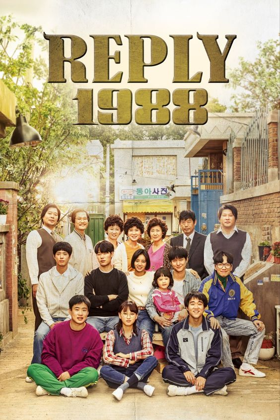
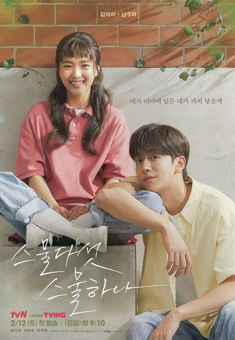
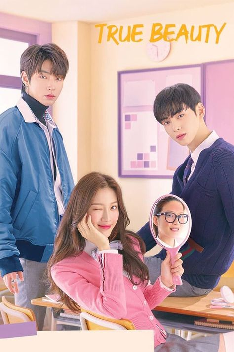
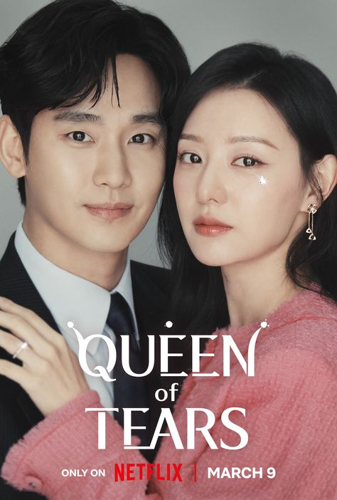
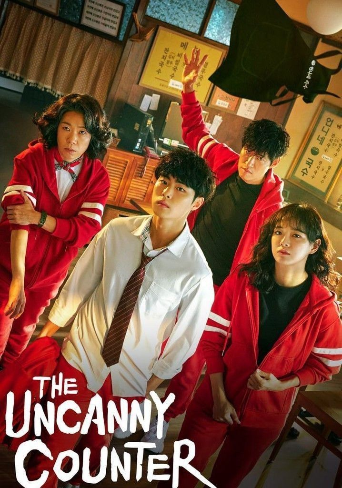
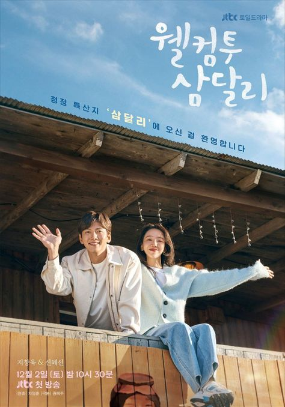
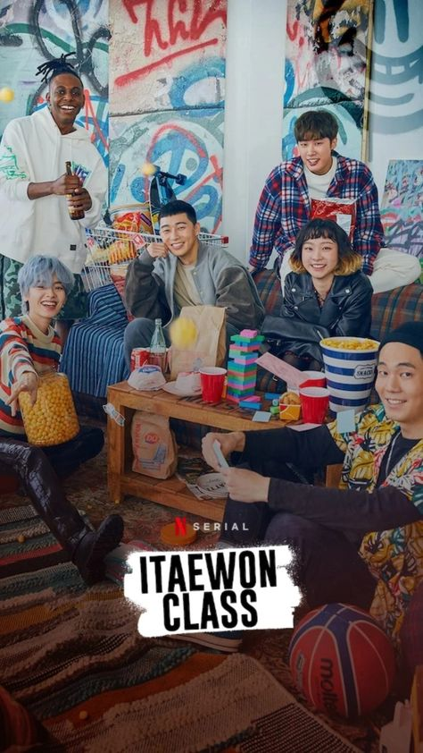
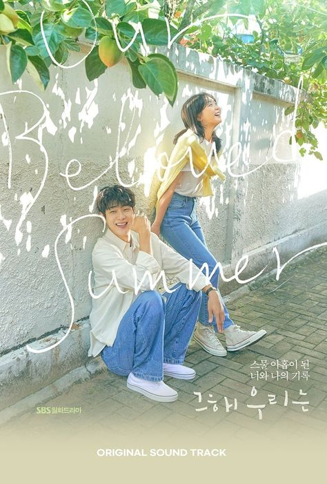
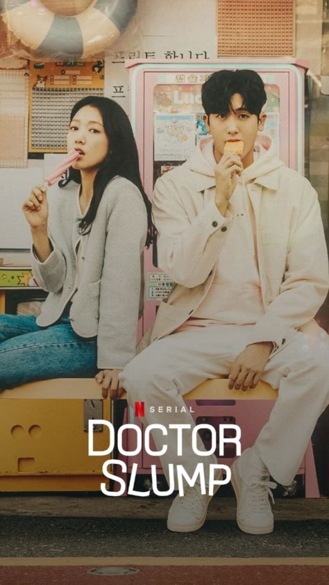
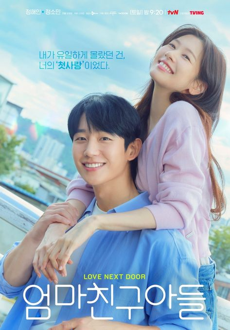

|  |
Reply 1988 |
20 |
Slice of Life, Family, Friendship |
Hyeri, Ryu Jun-yeol, Park Bo-gum |
A nostalgic journey through the everyday lives of five families in Seoul in 1988, focusing on friendship, family, and growing up. |
Reply 1988 is my favorite comfort drama because it makes me feel calm and happy. It shows how important family is and reminds me to love and appreciate my own family more. The friendships in the show also highlight how meaningful connections can be, inspiring me to value my friendships. Overall, it’s a lovely story about love, family, and friendship that makes my life better. |
|  |
Twenty Five Twenty One |
16 |
Drama, Romance, Coming-of-Age |
Kim Tae-ri, Nam Joo-hyuk, Bona |
This drama follows the lives of young people in the late 1990s and early 2000s as they navigate love, dreams, and the challenges of growing up. |
"Twenty Five Twenty One" touched my heart because it shows how difficult it can be to find your place in the world, especially when you're young and still figuring out who you are. Watching the characters chase their dreams and face hardships reminded me of my own journey and struggles. The story really captured the highs and lows of youth, from the excitement of new love to the pain of letting go of things you once held dear. It made me reflect on my own dreams and how important it is to keep moving forward, even when things are tough. |
|  |
True Beauty |
16 |
Romance, Comedy, School |
Moon Ga-young, Cha Eun-woo, Hwang In-yeop |
A high school girl who gains confidence through makeup navigates love and self-acceptance while hiding her true appearance. |
"True Beauty" is a fun and heartwarming drama about feeling insecure about looks in high school. I liked how the main character discovers that while makeup can boost her confidence, it's not the answer to all her problems. The show taught me that true beauty comes from being comfortable with yourself inside and out. It also reminded me that those who truly care will love you for who you are, not just how you look. |
|  |
Queen of Tears |
Melodrama, Romance, Family |
Kim Soo-hyun, Kim Ji-won, Park Sung-hoon |
The story revolves around a couple struggling to save their marriage while navigating the challenges of life, love, and family amidst high societal expectations. |
"Queen of Tears" is an emotional drama that really touched my heart. It shows the struggles of marriage and reminds us that relationships aren’t always perfect; what matters is how we deal with the ups and downs. The characters felt very real, and their raw emotions helped me connect with them. The story highlights that love is not just about happy moments but also about supporting each other through tough times. It made me realize the importance of communication and understanding in any relationship. While the drama can be heart-wrenching, it ultimately leaves you with hope that love can endure if you're willing to fight for it. |
|  |
The Uncanny Counter |
16 |
Fantasy, Action, Mystery |
Jo Byung-gyu, Yoo Jun-sang, Kim Se-jeong |
A group of demon hunters known as "Counters" pose as employees at a noodle shop while tracking down evil spirits that prey on humans. |
"The Uncanny Counter" is a thrilling drama that caught my attention from the start. It’s full of action and explores the theme of good versus evil. I loved how the characters, especially the Counters, weren’t just heroes with superpowers; they each had their own struggles and stories, making them relatable. Their teamwork against evil spirits gave me hope that we’re stronger when we support each other in tough times. The mix of action and emotional depth kept me engaged, and I found myself caring more about the characters with each episode. |
|  |
Welcome to Samdalri |
Drama, Slice of Life, Healing |
Ji Chang-wook, Shin Hye-sun, Im Si-wan |
The story follows the lives of the residents of a small, peaceful village as they overcome personal struggles and find healing in unexpected ways. |
"Welcome to Samdalri" is a heartwarming drama that captures the beauty of everyday life. I loved how it highlights the personal stories of growth, healing, and love in a small village. The connections between the characters felt real and emotional, reminding me of the importance of community and friendship. I became attached to the residents of Samdalri, each with their unique personalities and struggles. The show isn’t just about romance or drama; it’s about finding peace in tough times and realizing that home is where the heart heals. Watching it made me feel comforted and left me with a warm feeling long after each episode ended. |
|  |
Itaewon Class |
16 |
Drama, Business, Revenge |
Park Seo-joon, Kim Da-mi, Kwon Nara |
This drama follows a determined young man who opens a bar in Itaewon, seeking both personal success and revenge against those who wronged him, while also challenging societal norms and inequalities. |
"Itaewon Class" really impacted me because it’s not just a revenge story; it’s about persistence, overcoming challenges, and standing up for what’s right. I admired how the main character never gave up on his dreams despite many hardships. The drama tackles important issues like discrimination and corporate corruption, making it feel relevant and empowering. The friendships in the story are inspiring, showing how support from others can help you achieve your goals. It reminded me that success comes from perseverance and the courage to challenge the status quo. |
|  |
Our Beloved Summer |
Romance, Slice of Life, Comedy |
Choi Woo-shik, Kim Da-mi, Kim Sung-cheol |
This drama follows the complicated relationship of two former high school sweethearts who are forced to reconnect after their documentary becomes popular years later. |
"Our Beloved Summer" felt like a breath of fresh air. It genuinely portrays the ups and downs of life and relationships. The characters are imperfect; they make mistakes and grow, making the story feel real. I love how it shows that people change over time while still carrying pieces of their past. The drama beautifully captures the awkwardness and warmth of reconnecting with a former love. It reminded me to cherish good moments and that second chances can lead to something even more meaningful. The blend of humor, heartfelt emotions, and nostalgia made this drama unforgettable. |
|  |
Doctor Slump |
16 |
Medical, Comedy, Romance |
Park Shin-hye, Park Hyung-sik |
This drama tells the story of doctors who have hit rock bottom in their lives and careers, trying to find their way back while healing both themselves and their patients. |
"Doctor Slump" was heartwarming and uplifting. It explores how even those meant to help others, like doctors, can face struggles. Watching the main characters deal with personal failures and gradually regain their confidence was inspiring. The blend of medical drama and lighthearted comedy made their struggles relatable without feeling too heavy. It also highlighted the importance of taking care of yourself before helping others. This drama reminded me that even in our lowest moments, there’s always a way back up with hope and perseverance. |
|  |
Love Next Door |
Romance, Slice of Life, Comedy |
Kang Min-hyuk, Park Bo-young, Kim Ji-seok |
Neighbors navigate the ups and downs of life, love, and unexpected friendships in a cozy community. |
"Love Next Door" is a warm and light drama about love and friendship growing in a close neighborhood. The show highlights the charm of everyday interactions between neighbors, with funny and heartwarming moments. Each character grows as they build relationships, making the story easy to relate to and uplifting. The sweet romance that develops alongside the friendships adds a nice touch. It leaves you feeling comforted and reminds you of the beauty in simple connections with those around you. |